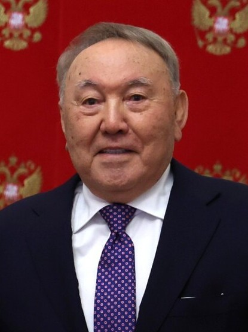

About Nursultan Nazarbayev
Nursultan Nazarbayev was born on 6 July 1940 in Chemolgan, Kazakhstan. He worked in the steel industry before entering politics. He served as the first president of independent Kazakhstan from 1991 to 2019. His presidency included economic reforms and nuclear disarmament, but also criticism over restrictions on political opposition and media freedom.
Important Events
- 1940 — Born in Chemolgan.
- 1990 — Became President of the Kazakh SSR.
- 1991 — Became President of independent Kazakhstan.
- 1997 — The capital moved from Almaty to Akmola.
- 2019 — Resigned from the presidency.
Key Initiatives
- Closure of the Semipalatinsk nuclear test site.
- Nuclear disarmament after independence.
- Relocation of the national capital.
- The Kazakhstan 2030 development strategy.